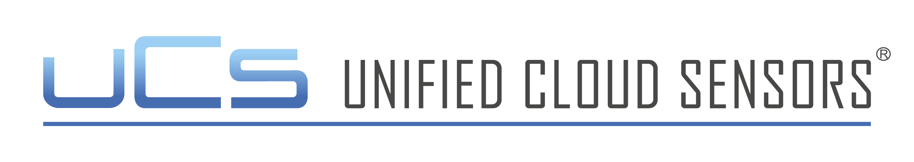
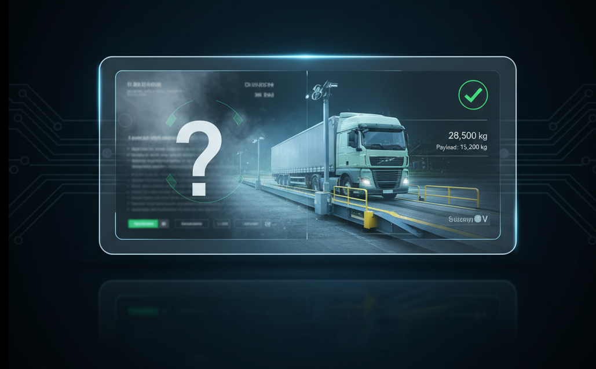

| Product | Description | Unit Price | Qty | Total Price |
|---|---|---|---|---|
| IIoT edge unit | 600.00 € | 600.00 € | ||
| Subscription (Months) | 59.00 € | 708.00 € | ||
| Custom Visual Interface (One-time setup) | 0.00 € | 0.00 € | ||
| TOTAL INVESTMENT: | 1,308.00 € | |||
| Metric | Description | Estimated Savings | Qty | Total Price |
|---|---|---|---|---|
| 1,000.00 € | ||||
| 200.00 € | ||||
| 500.00 € | ||||
| 250.00 € | ||||
| 500.00 € | ||||
| 750.00 € | ||||
| 0.00 € | ||||
| 7,500.00 € | ||||
| 500.00 € | ||||
| 11,200.00 € | ||||
| 9,892.00 € | ||||
| 0% | |||
| 5% | |||
| 10% | |||
| 15% | |||
| 20% | |||
| 25% | |||
| 30% |